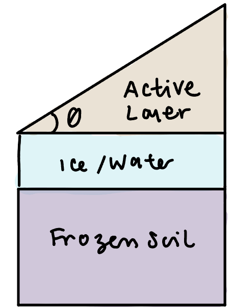
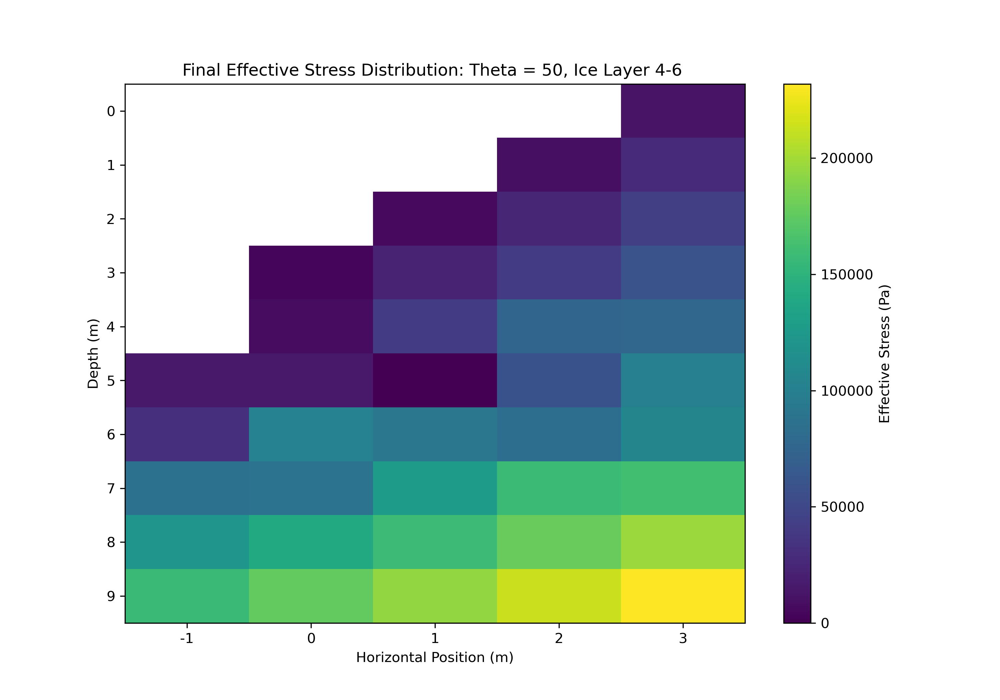
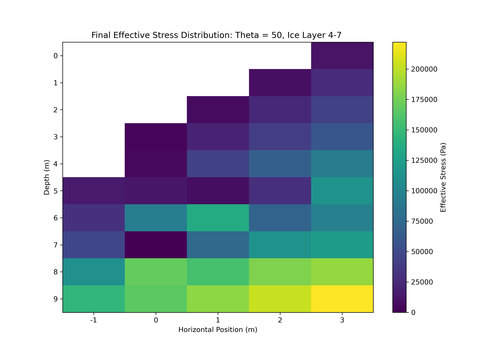

IN PROGRESS. A finite-element model investigating internal stress distributions within retrogressive
thaw slumps. Model outputs were compared against field observations to evaluate how slump
geometry and headwall angle influence stress concentrations and failure patterns in
ice-rich permafrost terrain.
Background

Field photograph of a retrogressive thaw slump used to calibrate model geometry.
Methods
Results
<

Stress distribution for a 4:6 slump ratio at 50° headwall angle.

Stress distribution for a 4:7 slump ratio at 50° headwall angle.
Discussion
Overview of modeled stress distribution across the slump body.